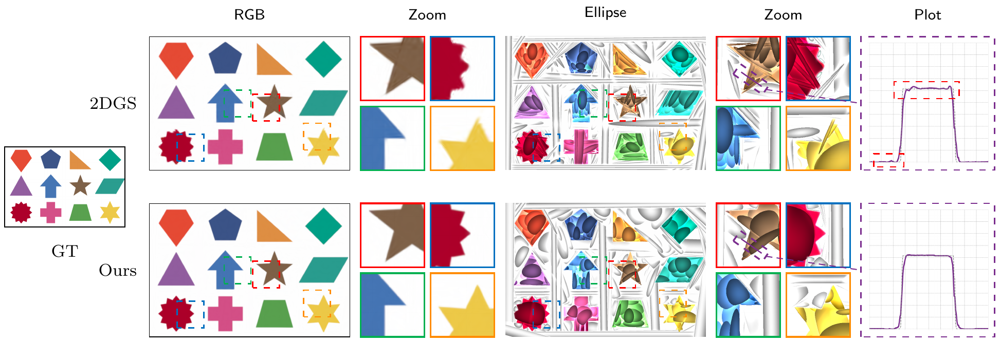
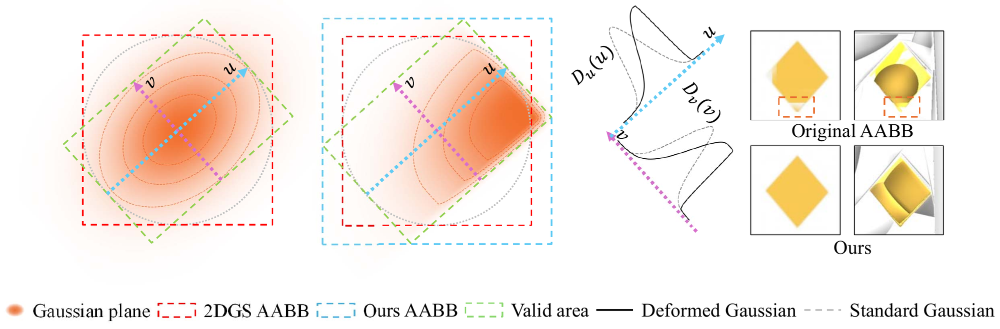
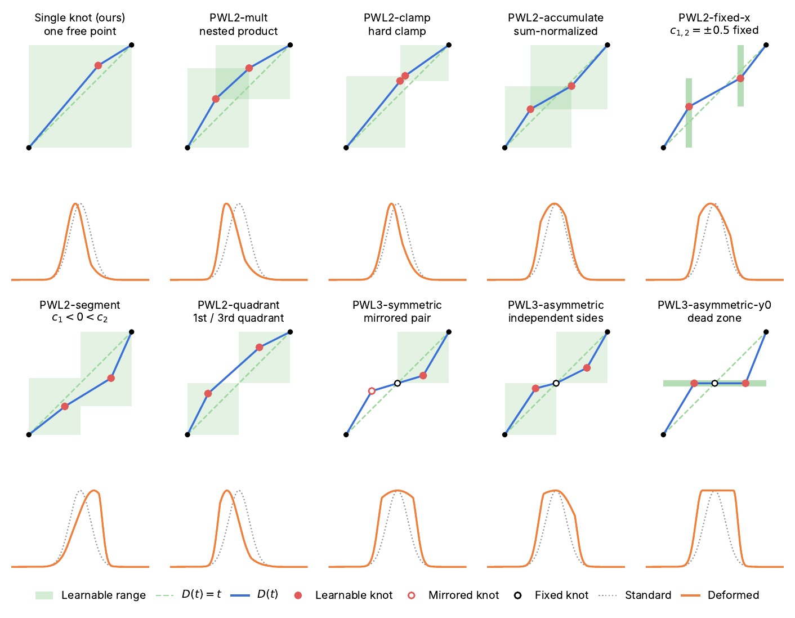

Abstract
2D Gaussian Splatting (2DGS) builds on 3DGS with planar Gaussian primitives that improve surface reconstruction and geometric fidelity. However, the smooth falloff of Gaussian kernels limits the reconstruction of high-frequency shape signals, over-smoothing edges and fine geometric detail. Prior works replace the kernel function, yet our systematic evaluation on signal fitting shows that all existing kernels suffer from the Gibbs phenomenon, producing oscillatory artifacts near sharp discontinuities. We therefore make the kernel deformable instead of replacing it. Warp-2DGS augments each Gaussian surfel with a learnable, monotonic coordinate remapping in its local tangent plane. With one free control point per axis (four parameters per primitive), the remapping yields asymmetric radial profiles that capture sharp edges and irregular structures symmetric kernels cannot represent. It preserves the differentiable rasterization pipeline of 2DGS with moderate training overhead and is optimized end-to-end through the rendering loss alone. Experiments on MipNeRF 360 and Tanks & Temples show that our method suppresses Gibbs artifacts at sharp boundaries and achieves the best PSNR among 2DGS-based approaches, with consistent gains over 2DGS in PSNR, SSIM, and LPIPS. The advantage holds across all primitive budgets, at comparable or fewer Gaussians. Gains concentrate at object boundaries, and PWL-sr retains the mesh quality of 2DGS.
Warping the kernel
Instead of replacing the Gaussian, each surfel passes its tangent-plane coordinate t = x/r through a monotonic piecewise-linear function D, anchored at (−1, −1) and (1, 1) with one learnable knot (c1, d1), and evaluates G(r·D(x/r)). Outside [−1, 1] the warp is the identity, so the Gaussian tail is untouched. The slope-ratio (sr) parameterization learns the knot position and the ratio of the two segment slopes instead, which decouples the two parameters and explores more kernel shapes. Drag the knot or the sliders:
deformation D(t)
kernel G(r·D(x/r)), r = 3

Novel view synthesis
Mip-NeRF 360 (×4) test views. Drag the divider to compare 2DGS with Warp-2DGS (PWL-sr).
| Method | Mip-NeRF 360 ×4 | Mip-NeRF 360 ×8 | TNT ×1 | ||
|---|---|---|---|---|---|
| Outdoor | Indoor | Outdoor | Indoor | ||
| 2DGS | 25.85 / 0.778 / 0.259 | 30.51 / 0.929 / 0.169 | 27.03 / 0.835 / 0.166 | 31.19 / 0.945 / 0.093 | 23.66 / 0.832 / 0.280 |
| Ours (PWL) | 25.93 / 0.784 / 0.243 | 30.85 / 0.933 / 0.160 | 27.08 / 0.838 / 0.157 | 31.36 / 0.947 / 0.088 | 23.86 / 0.835 / 0.272 |
| Ours (Pchip) | 25.89 / 0.782 / 0.246 | 30.87 / 0.933 / 0.161 | 27.06 / 0.837 / 0.159 | 31.30 / 0.947 / 0.089 | 23.91 / 0.835 / 0.274 |
| Ours (PWL-sr) | 25.94 / 0.784 / 0.245 | 30.89 / 0.933 / 0.160 | 27.11 / 0.839 / 0.157 | 31.43 / 0.948 / 0.088 | 23.92 / 0.836 / 0.273 |
| Ours (Pchip-sr) | 25.87 / 0.782 / 0.248 | 30.88 / 0.932 / 0.161 | 27.07 / 0.838 / 0.159 | 31.33 / 0.946 / 0.089 | 23.91 / 0.835 / 0.275 |
PSNR↑ / SSIM↑ / LPIPS↓, Outdoor and Indoor averaged over their scenes. Best in each column.
Beyond one knot
None of the multi-knot variants we tried offered a clear advantage over the single knot: adjacent free knots tend to drift together and, once merged, fail to separate again. The code includes the single-knot kernels of the paper and the multi-knot variants below.

BibTeX
@inproceedings{li2026warp2dgs,
title = {Warp-2DGS: Learnable Warped Kernels for 2D Gaussian Splatting},
author = {Li, Huibin and Yeum, Chul Min},
booktitle = {Advances in Neural Information Processing Systems},
year = {2026}
}